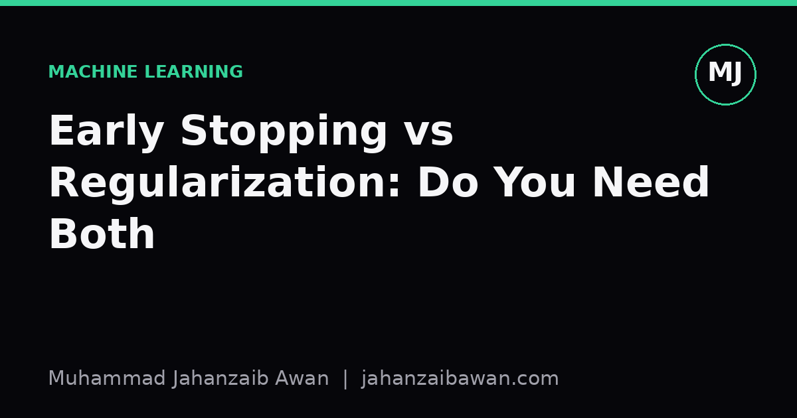

Early Stopping vs Regularization: Do You Need Both
Two different ways of fighting overfitting, one often mistaken for a substitute of the other. Here is how they actually relate and when to use both.

Why this question keeps coming up
I have lost count of how many times I have seen early stopping described as a form of regularization, full stop, as though the two were interchangeable tools you pick between based on taste. That framing is not wrong exactly, but it hides a more useful distinction. Early stopping and explicit regularization, such as L2 weight decay or dropout, both reduce overfitting, yet they do so through different mechanisms, they interact with your data and optimiser in different ways, and they fail in different modes. Treating them as a single lever means you miss cases where you genuinely need both, and you also miss cases where combining them carelessly wastes compute or hides a bug in your validation setup.
The question of whether you need both is not academic. In any project with a limited compute budget, every hyperparameter you tune costs time: patience for early stopping, weight decay coefficient, dropout rate, and so on. If two of these are doing the same job, tuning both is redundant and possibly harmful, since they can fight each other during search. If they are doing different jobs, skipping one leaves a gap. Getting this right saves tuning time and produces a model that generalises for the right reasons rather than by accident.
What early stopping actually does
Early stopping is a training-time decision rule, not a change to the loss function. You watch a validation metric, typically validation loss, epoch by epoch, and you halt training once that metric stops improving for some number of epochs, the patience. The implicit assumption is that training loss will keep falling as the model memorises idiosyncrasies of the training set, while validation loss will eventually turn upward once the model starts fitting noise rather than signal. Stopping at the turning point gives you the model that generalises best along that particular training trajectory.
Here is a concrete picture. Suppose you are training a moderately sized neural network for 200 epochs. Training loss falls smoothly from 1.8 to 0.05 over that span, essentially monotonically. Validation loss falls from 1.9 down to a minimum of 0.42 around epoch 60, then creeps back up to 0.51 by epoch 150 as the model overfits. Early stopping with a patience of 10 epochs would halt training somewhere around epoch 70, having noticed the validation loss failed to improve for ten consecutive epochs after its minimum, and it would restore the weights from the best epoch. Without early stopping, you would train to epoch 200 and ship a model that is measurably worse on held-out data despite having a much lower training loss.
The important thing to notice is that early stopping does not touch the model's capacity, its parameter count, or the shape of its loss surface. It simply chooses when to stop exploring that surface. The model at epoch 70 has exactly the same architecture and the same regularization terms as the model at epoch 150; only the parameter values differ, because they represent an earlier, less-overfit point in the optimisation trajectory.

What explicit regularization actually does
Regularization methods like L2 weight decay, L1 penalties, or dropout change what the model is optimising for, or how it optimises, at every single step, not just when training ends. L2 regularization adds a penalty term proportional to the sum of squared weights to the loss function, which discourages the optimiser from finding solutions with very large weight magnitudes. Dropout randomly zeroes a fraction of activations during training, which prevents units from co-adapting too tightly and acts as a kind of implicit ensembling.
Consider the same network again, but now trained with an L2 penalty coefficient of 0.001 added to the loss, no early stopping, and left to run the full 200 epochs. The training loss might now plateau around 0.15 rather than 0.05, because the penalty term actively resists the extreme weight values needed to fit noise precisely. Validation loss might bottom out at 0.40, similar to or slightly better than the early-stopped run, but crucially it may stay close to that minimum for the remaining epochs rather than climbing steadily, because the penalty keeps discouraging the kind of weight growth that drives overfitting in the first place.
This is the structural difference: regularization changes the destination, the actual minimum the optimiser converges towards, by reshaping the loss landscape. Early stopping does not change the destination at all; it changes how far along the path towards that destination you allow the optimiser to travel before you intervene. Both can land you in a similar place on a validation curve, but they get there by different means, and that matters when your data or task characteristics shift.
Where the two genuinely overlap
There is a real theoretical connection worth understanding, not just a superficial resemblance. For simple linear models trained with gradient descent under certain conditions, stopping early is approximately equivalent to applying an L2 penalty, with the effective penalty strength related to how many steps you have taken. Fewer steps behave like stronger regularization; more steps behave like weaker regularization. This equivalence is part of why early stopping earned its reputation as an implicit regularizer, and in these restricted settings the intuition that it substitutes for explicit regularization is genuinely accurate.
The trouble is that most models people build today, particularly anything with several layers of nonlinearities, dropout, batch normalisation, and adaptive optimisers like Adam, sit well outside the conditions where that neat equivalence holds. The interaction between adaptive learning rates, normalisation layers, and stochastic minibatch noise means the effective regularization from early stopping in a modern deep network is real, but it is not a clean stand-in for an explicit penalty. It tends to be less stable, more sensitive to the particular validation split you happen to have, and more sensitive to the exact patience and checkpoint frequency you choose.
So the overlap is genuine but narrow. It is enough to explain why early stopping reduces overfitting at all, but it is not enough to justify skipping explicit regularization whenever your model or optimiser departs from the simple linear case, which in practice is almost always.

A worked scenario where you need both
Imagine a tabular dataset with around three thousand training examples and forty features, several of which are noisy or weakly informative, and you are training a moderately deep multilayer perceptron. Using no regularization and no early stopping, training loss falls to near zero by epoch 300 while validation loss falls to a minimum around epoch 40 before rising sharply, reaching nearly double its minimum by epoch 300. This is a clear overfitting signature and it screams for early stopping.
Now add early stopping alone, with patience 15, and the model halts around epoch 55, delivering a validation loss close to its best value. That looks like a solved problem, but examine the learned weights and you may find a handful of features with very large magnitude coefficients, effectively memorising quirks of a few individual training examples that happen to have unusual values on the noisy features. The validation set, being small at three hundred examples, may not have enough of those unusual cases to reveal the problem clearly, so the validation curve looks fine while the model is still fragile.
Add a modest L2 penalty on top of the existing early stopping, and the weight magnitudes shrink substantially, the reliance on individual noisy features drops, and performance on a genuinely separate test set, or on new data collected later, improves even though the validation loss at the chosen stopping epoch looks almost identical to before. This is the practical case for using both: early stopping controls how long you search, while regularization controls the character of what you find during that search, and a validation set of modest size will not always catch problems that only regularization addresses directly.
When one is enough, or even excessive
There are situations where insisting on both adds cost without adding value. If you have a very large, diverse training set relative to model capacity, for instance millions of examples against a modestly sized model, overfitting risk is naturally lower, training and validation curves may track closely for a long time, and a light touch of early stopping alone can be entirely sufficient. Adding heavy weight decay in that setting can actually hurt performance by preventing the model from fitting genuine signal that is well supported by abundant data.
Conversely, if you are training with strong regularization already, such as substantial dropout and weight decay tuned specifically for your dataset size, you may find that validation loss never really turns upward within a reasonable training budget; it plateaus and stays flat. In that case early stopping still has value as a safeguard and as a compute-saving measure, since there is no point training to epoch 500 if nothing improves after epoch 120, but it is not doing meaningful regularization work of its own. It is functioning purely as an efficiency mechanism at that point, which is a perfectly legitimate role, just a different one from what it does in an unregularized setting.
The practical lesson is that the answer depends on where your training and validation curves sit relative to each other and on how large and representative your validation set actually is. A validation curve that diverges sharply from the training curve early on suggests regularization is doing too little work and needs strengthening. A validation curve that never really improves suggests you may be over-regularized and should relax the penalty before worrying about stopping time at all.
A practical checklist and closing thought
My working approach is to always use early stopping as a default safeguard, essentially for free, because it costs nothing beyond tracking a validation metric and it protects you from wasted compute and from shipping a model well past its useful training point. On top of that baseline, I treat explicit regularization strength as a genuine hyperparameter to be tuned against a validation set, starting from a small value and increasing it if the gap between training and validation performance stays wide even after early stopping has kicked in.
I am also careful about validation set size and construction, because both tools rely entirely on that validation signal being trustworthy. A validation split that leaks information from the training set, or one that is too small to represent the true data distribution, will make both early stopping and regularization decisions unreliable, since you would be tuning against noise rather than against genuine generalisation error. No amount of regularization or careful stopping logic fixes a broken evaluation split.
So, do you need both? In restrictive linear settings, arguably not, since the two are close cousins of each other. In almost everything else, meaning the deep, nonlinear, adaptively optimised models most of us actually train, the honest answer is that early stopping and explicit regularization address different failure modes, and using only one leaves a gap the other is specifically designed to fill. Use early stopping as a cheap, near-universal safeguard, then tune regularization strength deliberately based on what your training and validation curves are actually telling you, rather than assuming one technique quietly does the other's job.